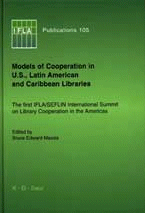

|  |
| About IR |
| Editors |
| Author instructions |
| Copyright |
| Author index |
| Subject index |
| Search |
| Reviews |
| Register |
| Home |
Bruce Edward Massis, editor. Models of cooperation in U.S., Latin American and Caribbean libraries: the first IFLA/SEFLIN International Summit on Library Cooperation in the Americas. Munich: Saur, 2003. 86 p. (IFLA Publications ; 105). ISBN 3 598 21835 4. €48.00.
The "IFLA Publication" series includes a wide variety of materials. Some editions are based on the papers and discussions of international seminars, conferences, or other meetings. Cooperation issues are present to some extent in most of them, as one of the missions of the Association itself is the promotion of international cooperation. The volume under review consists of the reports from the Summit on cooperation of the USA, Latin American, and Caribbean libraries held in Miami, on the Biscay Bay campus of Florida University (April 17-20, 2002).
According to the editor of the collection:
More than 150 librarians from 8 countries participated in three full days of professional and social activities. The goal of the Summit had been to open a dialogue between U.S. libraries and those in Latin America and the Carribean. (p. 17).
The Summit was organised in association with the Southeast Florida Library Information Network (SEFLIN), which was established in 1984 and is one of the largest library cooperatives the USA. The Network serves a large Latino population in the State and also collaborates with libraries in the neighbouring countries. Therefore, it became a natural and experienced partner for the organisation of this event.
The introductions present the welcoming addresses of the representatives of the organisers as well as the characteristics and mission statements of the organising institutions. However, it is not quite clear why the meeting has received the name of a 'Summit'. Neither introductions nor foreword, nor the collection of papers indicate that its goal or the participation differed from any other international conference on a specific topic of library work organised by professional bodies. It is also not very clear whether the published papers were selected from a bigger number of presentations (and, if so, what were the criteria for selection) or all contributions were included in the volume. Nevertheless, it has to be appreciated that this is the first IFLA publication (though not a 'monograph' as stated on p. 11) focusing on the activities in the Latin American and Caribbean region.
Eleven papers (chapters) were written by librarians and LIS educators from the USA (8), Mexico (1), Jamaica (1), Trinidad and Tobago (1), and Argentina (1). The editor has provided a general background for further presentations by explaining the general idea, the topic and some organisational issues of the conference and introducing the professional supporters. Ten basic chapters deal with general theoretical and practical issues of cooperation, describe projects and services of libraries. Dr. A. Rodriguez explores models of cooperation (p. 19-25), K. Nevins investigates the issue of participation in multiple consortia (67-71). S. Ferguson provides an overview of library cooperation problems, participants and projects in Caribbean (p. 31-36). G. Williams explore international resource sharing project conducted by Association of Research Libraries (p. 52-55), R.A. Seal investigates interlibray loan as a form of global resource sharing (p. 37-44). Electronic and virtual library services are also presented: the Virtual Health Library of the Pan American Health Organisation (by E. Greenridge, p. 45-51), the Virtual Library in Argentina (by P. Borches, p. 56-60), and a library portal for Spanish speaking population in Southeast Florida (p. 72-82). Two papers deal with educational issues: problems of international LIS programmes for the region (by Dr. V. Gregory, p. 26-30), and library services for distance students in Latin America and the Carribean (by L. Ramirez and J. Tunon, p. 61-66).
This small volume manages to convey the enormous challenges and problems that libraries of the region have to solve. The economic and technological differences of the countries range from the most developed to the most backward in the world. It is easy to distinguish two big qualitatively different groups of library projects and problems within the USA boundaries and beyond. The first group may be characterised by pooling together the existing wealth of resources and seeking the highest quality of service, the second, by pooling efforts and seeking the best results with minimal means. However, the social, cultural, and language differences cause difficulties on the smallest territories of Caribbean islands as well as in the huge continental states (wealthy or poor). The solutions presented in the book have the standard features that might be recognized by librarians anywhere in the world and are unique at the same time.
IFLA's attempts to represent the experience of the libraries from different regions of the world is very important for the global community of librarians who may find unexpected solutions for their problems on the other side of the globe. This is also one of the 'models of cooperation'.
Dr Elena Macevičiūtė
Högskolan i Borås and
Vilnius University
January 2004
How to cite this review
Macevičiūtė, E. (2003) Review of: Bruce Edward Massis, editor. Models of cooperation in U.S., Latin American and Caribbean libraries: the first IFLA/SEFLIN International Summit on Library Cooperation in the Americas. Munich: Saur, 2003. Information Research, 9(2), review no. R122 [Available at: http://informationr.net/ir/reviews/revs122.html]